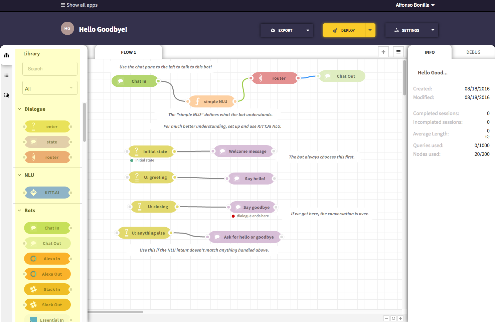
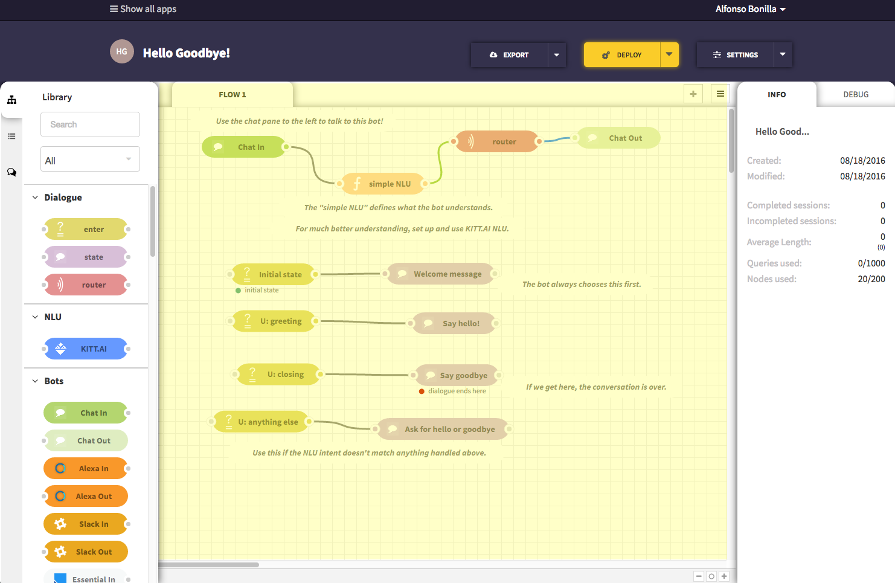
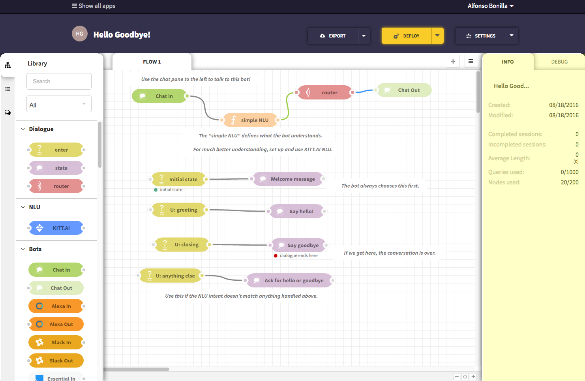

ChatFlow Quick Start¶
Table of Contents
Introduction¶
This ChatFlow tutorial provides a quick overview on how to access and navigate KITT.AI‘s ChatFlow platform.
- By the end of this tutorial, you will be able to:
- access ChatFlow
- create a Project
- orient yourself in the ChatFlow editor
Accessing ChatFlow¶
ChatFlow is hosted by KITT.AI and can be accessed using any web browser.
To Access:
- Go to http://chatflow.kitt.ai
- Log in with your Google, Facebook, Twitter or Github account.
Create a New App from a Sample Project¶
- Click on “Create new app” to start creating a new app. Each app or project corresponds to a bot.

- In the pop-up, under the Use a sample project section, Look for the “Hello Goodbye!” sample project. Click on it. When the page refreshes, you will be in the ChatFlow Editor.
The Node Library is on the left side of the Editor and contains various types of nodes.
The main area of the Editor is the Canvas. The nodes in your canvas will become the content of our project.
Note
When you select a sample project, the canvas will be already populated by several nodes. If you start with a “clean project”, the canvas will be empty.
The Info Tab on the right side of the Editor provides information about the current node.
Tip
This is a great resource to learn more about each type of node.
- Click Deploy to deploy your bot allowing for you and your user to interact with it.

- Click the Chat Tab on the left side of the Editor. This is where you can talk directly with the bot.

- Test your bot. Try saying “hi”, “hello”, and “goodbye” to the bot. The bot respond will respond with the appropriate message. If you try to say anything else, it will not understand you.

You are now officially oriented with the ChatFlow Editor! A world of bots is waiting to be created! Are you up to the task?